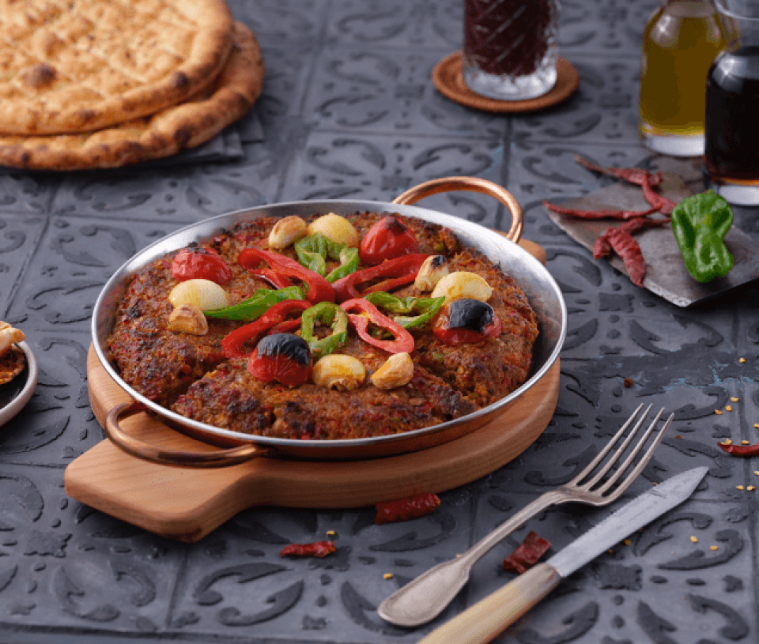

Nefis Kilis Tava
Parmaklara Dikkat!
Kilis Tava, nam-ı diğer etin en güzel hali, nefis bir lezzet.
- Malzemeler -
- 1 adet sivri yeşil biber
- 1 diş sarımsak
- 1 adet kırmızı kapya biber
- 1 adet kuru soğan
- 1 adet domates
- Yarım kilogram kadar kıyma
- 1 çay kaşığı tuz
- 1 çay kaşığı kırmızı toz biber
- 1 çay kaşığı kekik
- 1 çay kaşığından az karabiber
- 2 adet patates
- Nasıl Yapılır? -
- Kıymayı derin bir tasa alalım.
- Sarımsağı rendeleyip veya minik minik doğrayıp, üzerine ilave edelim.
- Domatesi, biberleri ve soğanı rondodan geçirip; karabiber, tuz, kimyon, kekik arzuya göre ve ufak bir tutam maydanozu da ince ince doğrayalım.
- Bir yemek kaşığı kadar sıvı yağ ile kıymayı güzelce yoğuralım.
- Kıymalı harcı bir kenara alıp, patatesi soyup yuvarlak dilimler halinde kesip tuzlayalım.
- Daha sonra patatesleri alta dizip, üzerine yoğurduğumuz kıymayı yayıp bıçakla istediğiniz gibi şeklini verelim.
- Domates, biber ile süsleyip, üzerini de folyo ile güzelce kapatalım.
- 200 derece ısıtılmış fırında, bir müddet kapalı olarak pişirelim.
- Daha sonra folyoyu çıkarıp kızartalım ve kontrollü bir şekilde pişirelim.